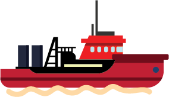
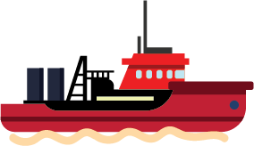

TUAH
INDUSTRI HULU MIGAS
PASCA MASA JAYA
Dua sampai tiga dekade silam, Indonesia terkenal sebagai negara produsen dan eksportir utama
minyak dunia. Ini terjadi lantaran negara kita mampu memproduksi minyak bumi dengan jumlah
besar dan mengekspornya.


Dengan fakta tersebut, Indonesia pun menjadi salah satu anggota organisasi negara-negara pengekspor minyak (OPEC)
yang punya pengaruh lumayan besar kala itu.


Adapun untuk dalam negeri, industri hulu minyak dan gas (migas) punya peranan penting bagi pembangunan Tanah Air.
Ini karena memberikan sumbangan besar bagi penerimaan negara.
Hasil riset Reforminer Institute menyatakan,
pada medio 1970-1990 sektor migas memberikan sumbangan 62,88 persen terhadap penerimaan negara.

Kini malah keadaan berbanding terbalik.
Indonesia bukan lagi negara penghasil migas
bahkan terancam mengalami krisis migas.


Meski bukan lagi penyumbang penerimaan terbesar dalam APBN,
tapi industri hulu migas masih punya peran signifikan menggerakan roda perekonomian.
Bahkan sektor ini menyebebkan efek berganda di berbagai bidang.

INVESTASI
Hasil penelitian SKK Migas dan Universitas Indonesia tahun 2015

TKDN
Tak hanya itu, multiplier effect lain dari sektor hulu migas adalah terdongkraknya industri dalam negeri. Utamanya, terkait tingkat komponen dalam negeri (TKDN).
Hal itu bisa terjadi karena SKK Migas mengeluarkan Pedoman Tata Kerja (PTK) yang mengatur pengelolaan rantai suplai Kontraktor Kontrak Kerja Sama (KKKS) di hulu migas. Dalam PTK ini, KKKS wajib melibatkan perusahaan dalam negeri untuk pengadaan barang dan jasa.

Selama beberapa tahun terakhir, tren penggunaan TKDN di sektor ini terus meningkat.
Sumber: SKK Migas 2018
Hal itu berdampak positif bagi pendapatan perusahaan dalam negeri, termasuk Badan Usaha Milik Negara (BUMN) yang memasok barang dan jasa ke industri hulu migas.
 Sumber: SKK Migas 2018
Sumber: SKK Migas 2018
PERBANKAN
Terkait transaksi keuangan juga memberikan efek berganda pada perbankan nasional. Sebab sejak tahun 2009, industri hulu migas diwajibkan menggunakan bank umum nasional.
Khusus bagi KKKS yang sudah memasuki masa produksi, semua transaksi pembayaran wajib menggunakan bank BUMN atau BUMD.

Total transaksi pembayaran pengadaan melalui bank-bank itu dari April 2009 sampai September 2018 mencapai 69,36 miliar dollar AS
Sumber: SKK Migas 2018
DBH
Efek berganda lain dari industri hulu migas adalah Dana Bagi Hasil (DBH) antara Pemerintah Pusat dan daerah penghasil migas.
Dasar hukum:
Undang-Undang Nomor 33 Tahun 2004 tentang Perimbangan Keuangan Antara Pemerintah Pusat dan Pemerintah Daerah
DBH


Pemerintah Pusat
84,5%
Gaji PNS, Guru, Jaksa

Pembangunan jalan, perkantoran, dan fasilitas umum
Pemerintah Daerah
15,5%
Pendidikan 0,5%
Provinsi
Kabupaten/ kota penghasil
DBH

Pemerintah Pusat
69,5%
Gaji PNS, Guru, Jaksa
Pembangunan jalan, perkantoran, dan fasilitas umum
Pemerintah Daerah
30,5%
Pendidikan 0,5%
Provinsi
Kabupaten/ kota penghasil

DBH
Khusus untuk Provinsi Papua dan Papua Barat karena merupakan daerah Otonomi Khusus (Otsus) maka punya perhitungan DBH migas berbeda.
Dasar hukum:
- Undang-Undang Nomor 21 Tahun 2001 Tentang Otonomi Khusus Bagi Propinsi Papua
- Perpu Nomor 1 Tahun 2008 Tentang Otonomi Khusus Papua
- Lembaran Negara RI Nomor 57 Tahun 2008 Tentang Otonomi Khusus Pemerintah Daerah Papua
DBH
Pemerintah Pusat
30%
Gaji PNS, Guru, Jaksa
Pembangunan jalan, perkantoran, dan fasilitas umum
Pemerintah Daerah
70%
Peningkatan dan kesejahteraan masyarakat 55%
Provinsi
Kabupaten/ kota penghasil
DBH
Pemerintah Pusat
30%
Gaji PNS, Guru, Jaksa
Pembangunan jalan, perkantoran, dan fasilitas umum
Pemerintah Daerah
70%
Peningkatan dan kesejahteraan masyarakat 55%
Provinsi
Kabupaten/ kota penghasil

DBH
Salah satu daerah yang bisa menjadi contoh relevan keberhasilan pengelolaan DBH migas dan efek berganda industri hulu migas adalah Kabupaten Bojonegoro di Jawa Timur.
Kabupaten ini, awalnya dikenal daerah miskin, tetapi ekonominya kini terdongkrak dengan hadirnya industri hulu migas. Angka pertumbuhan eknonominya pun dari tahun ke tahun terus naik.


Padahal, jika menilik ke belakang, Bojonegoro pernah menjadi daerah paling miskin se-Jawa Timur. Bahkan pada masa kolonial Belanda, sejarawan Australia C.L.M. Penders dalam buku Curse To Blessing menyebut Bojonegoro sebagai endemic poverty atau pusat kemiskinan.
BUMD
Daerah bisa mendapat tambahan pemasukan dari
Participating Interest (PI) sebesar 10 persen.
Dasar hukum:
- Sesuai pasal 34 Peraturan Pemerintah Nomor 35 Tahun 2004 tentang Kegiatan Usaha Hulu Minyak dan Gas Bumi, Kontraktor KKS wajib menawarkan kepada Badan Usaha Milik Daerah (BUMD) untuk terlibat mengelola blok migas maksimal sebesar 10 persen.
- Bahkan penerapan PI 10 persen tersebut kembali diperkuat oleh Peraturan Menteri Energi dan Sumber Daya Mineral (ESDM) Nomor 37 Tahun 2016.
BUMD

Dasar hukum:
Lewat regulasi tersebut BUMD tak perlu lagi repot-repot mengeluarkan biaya operasional migas karena akan ditanggung lebih dahulu oleh KKKS. Baru setelah itu daerah akan mengembalikan biaya tersebut secara bertahap dari hasil produksi bagian BUMD dengan tetap menjamin penerimaan bagi hasil untuk perusahaan daerah terkait.
Kepemilikan saham BUMD dalam PI sebesar 10 persen tidak dapat diperjualbelikan, dialihkan atau dijaminkan.
Sumber: migas.esdm.go.id, April 2017Membangun Daerah Pinggiran
KKKS atau K3S juga punya berbagai program untuk membangun daerah yang menjadi wilayah ekplorasinya.
Contoh di Kepulauan Anambas dan Natuna, Kepulauan Riau

Di sini ada tiga K3S yang beroperasi:

Mereka punya berbagai program untuk membangun daerah ini
Membangun Daerah Pinggiran
Membangun Bandara Udara Matek di Kepulauan Anambas.
Dahulu hanya digunakan untuk jalur keluar-masuk industri hulu migas di kepulauan tersebut.
Saat ini bandara pun sudah melayani penerbangan komersil.
Bersama Yayasan Umar Kayam merenovasi infrastruktur dan membina pariwisata di Desa Belibak, Kecamatan Palmatak.

Pengembangan desa wisata berbasis masyarakat dengan membentuk Kelompok Sadar Wisata (Pokdarwis).
Mengadakan pelatihan dan pendampingan rutin untuk pengelolaan homestay, manajemen desa wisata, dan tour guide wisata bahari serta budaya.
Membangun Daerah Pinggiran

Merenovasi 5 rumah warga setempat supaya menarik untuk digunakan sebagai homestay bagi wisatawan
Membangun sistem berwawasan lingkungan dengan konsep Adiwiyata di tiga sekolah dasar (SD)

Pada 2015 meluncurkan program pengembangan Usaha Kecil Menengah (UKM) Karya Anambas Tumbuh Mandiri (KASTURI)
Menginisasi program Balai Budidaya Ikan (BBI) sejak tahun 2007. Program ini telah memberikan manfaat kepada 271 nelayan dari 19 desa di lima kecamatan Kepulauan Anambas
Membangun Daerah Pinggiran
Menjaga ekosistem lingkungan dengan membuat konservasi tukik (anak penyu).

Budidaya pertanian tanaman organik di Desa Teluk.
Mendirikan TK Anoa pada 1999 dan TK Wijaya Kusuma yang diresmikan pada 2018.
Membangun gedung Pusat Kegiatan Belajar Masyarakat (PKBM) di Desa Piabung, Pulau Matak.
Menyediakan layanan Posyandu Lavender di Desa Air Bini.
Sumber: Steller SKK MigasMembangun Daerah Pinggiran
Membangun SMP rintisan pada 2005 dan SMA pada 2011.

Membangun Desa Ekonomi terpadu di Desa Air Bini Kecamatan Siantan Selatan